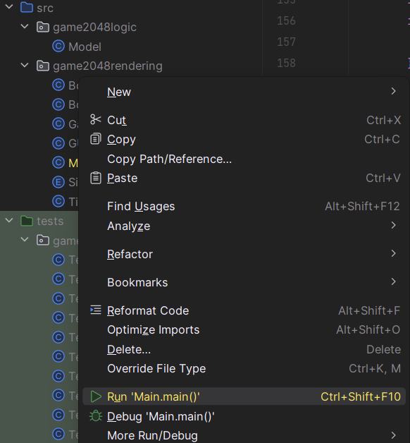
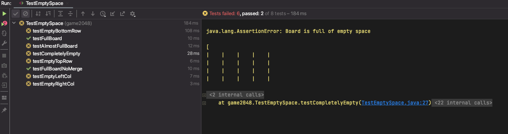

项目0：2048
截止日期：1月29日星期一，太平洋时间晚上11:59。
常见问题
每个作业顶部都会有一个常见问题链接。你也可以通过在URL末尾添加
/faq
来访问。项目0的常见问题位于
这里
。
请注意，本项目的提交次数有限。详情请参阅 提交与评分 。
概述
前置知识：
点击这里查看项目的视频概述。 该视频来自项目的早期版本，因此会有一些细微差异。
在本项目中，你将通过创建一个可玩的2048游戏来练习Java。我们已经为你实现了图形和用户交互代码，因此你的任务是实现游戏的逻辑。
如果你不熟悉2048， 你可以通过这个链接试玩演示版 。
这个项目一开始可能看起来令人生畏！有很多初始代码使用了你可能没有见过的Java语法，但没关系！在现实世界中，你经常会使用不完全理解的代码库，并且需要进行一些修补和实验才能获得想要的结果。别担心，当我们到项目1时，你将有机会从头开始。
使用Git
将工作 频繁地 提交到你的仓库非常重要。版本控制是一个强大的工具，可以在你搞砸了或者你的狗吃掉了你的项目时救你，但你必须定期使用它才能发挥作用。可以每15分钟提交一次；Git只保存更改的内容，尽管它表现得像是对整个项目进行了快照。
命令
git status
会告诉你自上次提交以来修改、删除或可能添加了哪些文件。
它还会告诉你有多少更改尚未发送到GitHub仓库。
典型的命令大致如下：
git status # 查看需要添加或提交的内容。
git add <file or folder path> # 添加或暂存任何修改的文件。
git commit -m "提交信息" # 提交更改。使用描述性的信息。
git push origin main # 将本地更改反映到GitHub上，以便Gradescope可以看到。
然后你可以继续处理项目，直到准备好再次提交和推送，届时你将重复上述步骤。养成频繁提交并使用有意义的提交信息的习惯对你有利，这样当你需要恢复到旧版本的代码时，不仅可能，而且很容易。我们建议你每次添加重要的代码部分或达到某个里程碑（例如通过新测试）时都提交一次。
2048规则：基本规则
2048在一个方格网格上进行。每个方格可以是空的，或者包含一个带数字的方块。
玩家选择一个方向（使用方向键）来 倾斜 棋盘：北、南、东或西。所有方块都会朝该方向滑动，直到运动方向上没有空余空间为止。
当一个方块滑动时，它可能会与另一个具有相同数字的方块 合并 。每当两个方块合并形成一个更大的方块时，玩家将获得新方块上数字对应的分数。你将在任务4-10中实现这一点。
游戏开始时会随机生成一个方块（值为2或4）。每次倾斜后，如果倾斜没有改变棋盘状态，则不会随机生成新方块。否则，会在棋盘的一个空格子上添加一个随机生成的方块。你的代码不需要添加任何新方块！我们已经为你完成了这部分。
当当前玩家没有可用的移动（没有任何倾斜可以改变棋盘），或者某一步形成了一个包含2048的方块时，游戏结束。你将在任务1-3中实现这一点。
环境搭建
获取框架文件
按照
作业工作流指南
中的说明获取框架代码并在IntelliJ中打开。对于本项目，我们将在
proj0/
目录中工作。
如果你遇到某种错误，请停下来，要么仔细阅读 git常见问题 来解决，要么在答疑时间或Ed上寻求帮助。与使用git命令瞎猜相比，这样可以省去很多麻烦。如果你发现自己试图使用Google推荐的命令，如force push， 不要这样做 。 不要使用
git push -f，即使你在Stack Overflow上找到的帖子说要这样做！如果你无法让Git正常工作，作为最后的手段，请观看 这个视频 来提交你的作业。
文件结构
proj0
文件夹分为两个
包
：
game2048logic
和
game2048rendering
。虽然我们在61B中不会过多讨论它们，但包是一种将代码组织到不同文件夹中的方式。例如，所有图形代码都在
game2048rendering
包中，所有游戏逻辑代码都在
game2048logic
包中。你可以在下面的文件结构中看到这一点：
proj0
├── game2048logic
| ├── Model.java
├── game2048rendering
├── Board.java
... (其他一些文件) ...
├── Main.java
├── Side.java
├── Tile.java
在整个项目中，你只需要修改
game2048logic/Model.java文件。对其他文件的更改不会被Gradescope识别。但是，你需要查看并使用（但不修改！）其他文件中的一些方法。我们将在规范中提供这些方法的描述。
运行游戏
你可以通过运行
game2048rendering
包中的
Main.java
文件来运行游戏。你可以右键单击该文件并选择"Run 'Main.main()'"：

如果一切设置正确，你应该会看到类似下面的图片：

目前，你的游戏什么都不做，但在本项目结束时，你将拥有一个功能完整的2048实现！
任务1：空位存在检测
在
Model.java
中，完成
emptySpaceExists()
方法。（不要修改任何其他文件。）
如果棋盘上有任何方块为null，该方法应返回true。
初始代码：棋盘坐标
我们的实现使用xy坐标，(0, 0)位于
左下角
：

初始代码：
Board
类
Board类表示一个方块棋盘。
private
关键字意味着你不能直接访问
Board
类的实例变量。你只能从
Model
中访问
public
方法和变量。（关于这些关键字及其用途，我们将在课程后面详细讨论。）
在任务1中与
Board
对象交互，你需要使用
size()
和
tile(int x, int y)
方法。这些方法在
Board.java
中有文档说明。
初始代码：
Tile
类
Tile类表示棋盘上的带数字的方块。
如果一个
Tile
类型的变量是
null
，这表示棋盘上的一个空格子。要检查
Tile t
是否为null，你可以使用表达式
if (t == null) {...}
与Tile对象交互，你需要使用
value()
方法，该方法返回给定方块的数值。
语法示例：如果
t
是一个
Tile
类型的变量，表示一个值为8的方块，那么
t.value()
将返回8。
如果你尝试在一个
null的Tile对象上调用value()，你会得到一个NullPointerException。你可以在调用value()之前检查方块是否为null来避免这种情况。
测试与调试
要测试你的方法，右键单击
TestEmptySpace.java
文件并选择"Run 'TestEmptySpace'"来运行测试：

（你也可以通过右键单击
game2048logic
> "Run 'Tests in 'game2048logic'"来运行整个文件夹中的所有测试。）
或者，你可以打开
TestEmptySpace.java
文件，然后单击
public class TestEmptySpace
旁边的绿色箭头来运行测试（你的可能看起来略有不同）：

你也可以用同样的方式运行单个测试。
在项目的其余部分（以及整个课程中！），你都将以相同的方式运行所有测试。
TestEmptySpace
包含以下测试：
-
完全空的棋盘（
testCompletelyEmpty）：在没有方块的棋盘上调用emptySpaceExists -
空的顶行（
testEmptyTopRow）：在顶行没有方块的棋盘上调用emptySpaceExists -
空的底行（
testEmptyBottomRow）：在底行没有方块的棋盘上调用emptySpaceExists -
空的左列（
testEmptyLeftCol）：在左列没有方块的棋盘上调用emptySpaceExists -
空的右列（
testEmptyRightCol）：在右列没有方块的棋盘上调用emptySpaceExists -
一个空位（
testAlmostFullBoard）：在只有一个空位的棋盘上调用emptySpaceExists -
满棋盘但有有效合并（
testFullBoard）：在没有空格子但存在合法移动的棋盘上调用emptySpaceExists。检查emptySpaceExists仍然返回false。 -
满棋盘（
testFullBoardNoMerge）：在没有空格子且不存在合法移动的棋盘上调用emptySpaceExists。检查emptySpaceExists仍然返回false。
如果你的实现正确，所有8个测试都应该通过。
以下是如果你失败了其中一个测试，错误消息会是什么样子：

在左侧，你会看到所有已运行测试的列表。黄色X表示我们失败了一个测试，而绿色勾选表示我们通过了。在右侧，你会看到一些有用的错误消息。要单独查看一个测试及其错误消息，请单击左侧的测试。例如，假设我们想查看
testCompletelyEmpty
测试。

右侧现在是该测试的单独错误消息。第一行有一个有用的消息：
"Board 是 full of empty space"
，后面是棋盘的
String
表示。你会看到它显然是空的，但我们的
emptySpaceExists
方法返回了
false
，导致这个测试失败。测试代码顶部的javadoc注释也有一些有用的信息，以防你失败了测试。你可以单击蓝色下划线的文本来查看测试内容。
任务2：最大方块存在检测
在
Model.java
中，完成
maxTileExists()
方法。（不要修改任何其他文件。）
如果棋盘上有任何方块具有获胜值（默认为2048），该方法应返回true。
注意：你不应该在代码中硬编码常量2048，而应该使用变量
MAX_PIECE
（已经为你定义好了）。例如，你应该写
if (x == MAX_PIECE)
而不是
if (x == 2048)
。
保留像
2048
这样的硬编码数字是一种不好的编程习惯，有时被称为"魔术数字"。这种魔术数字的危险在于，如果你在代码的一部分更改了它们而在另一部分没有更改，你可能会得到意外的结果。通过使用像
MAX_PIECE
这样的变量，你可以确保它们一起被更改。
测试与调试
要测试你的方法，请运行
TestMaxTileExists.java
中的测试。
TestMaxTileExists
包含以下测试：
-
测试空棋盘（
testEmptyBoard）：在没有方块的棋盘上调用maxTileExists -
测试没有最大方块（
testFullBoardNoMax）：在没有最大方块的满棋盘上调用maxTileExists -
测试有最大方块的棋盘（
testFullBoardMax）：在只有一个最大方块的满棋盘上调用maxTileExists -
测试有多个最大方块的棋盘（
testMultipleMax）：在有几个最大方块的棋盘上调用maxTileExists -
测试右上角有最大方块的棋盘（
testTopRightCorner）：在右上角有一个最大方块的棋盘上调用maxTileExists -
测试左上角有最大方块的棋盘（
testTopLeftCorner）：在左上角有一个最大方块的棋盘上调用maxTileExists -
测试左下角有最大方块的棋盘（
testBottomLeftCorner）：在左下角有一个最大方块的棋盘上调用maxTileExists -
测试右下角有最大方块的棋盘（
testBottomRightCorner）：在右下角有一个最大方块的棋盘上调用maxTileExists
如果你的实现正确，所有测试都应该通过。
任务3：至少存在一步有效移动
在
Model.java
中，完成
atLeastOneMoveExists()
方法。（不要修改任何其他文件。）
如果存在任何有效移动，该方法应返回true。如果玩家可以按下某个按钮（上、下、左、右）导致至少一个方块移动，则存在有效移动。
有效移动存在的两种情况：
- 棋盘上至少有一个空位。
- 有两个相邻（它们之间可以有空位）值相同的方块。
例如，对于下面的棋盘，我们应该返回true，因为至少有一个空位。
| 2| | 2| |
| 4| 4| 2| 2|
| | 4| | |
| 2| 4| 4| 8|
对于下面的棋盘，我们应该返回false。无论你在2048中按下什么按钮，什么都不会发生，也就是说，没有两个相邻的方块具有相同的值。
| 2| 4| 2| 4|
| 16| 2| 4| 2|
| 2| 4| 2| 4|
| 4| 2| 4| 2|
对于下面的棋盘，我们会返回true，因为向右或向左移动会合并两个64方块，并且向上或向下移动会合并32方块。换句话说，至少存在两个值相同的相邻方块。
| 2| 4| 64| 64|
| 16| 2| 4| 8|
| 2| 4| 2| 32|
| 4| 2| 4| 32|
测试与调试
要测试你的方法，请运行
TestAtLeastOneMoveExists.java
中的测试。
TestAtLeastOneMoveExists
包含以下测试：
-
空位存在（
testEmptySpace）：在有空位的棋盘上调用atLeastOneMoveExists -
有效倾斜存在（
testAnyDir）：在任何方向倾斜都是有效移动的满棋盘上调用atLeastOneMoveExists -
有效左/右倾斜（
testLeftOrRight）：在左右倾斜是唯一有效移动的满棋盘上调用atLeastOneMoveExists -
有效上/下倾斜（
testUpOrDown）：在上下倾斜是唯一有效移动的满棋盘上调用atLeastOneMoveExists -
有最大方块的有效倾斜（
testMoveExistsMaxPiece）：在存在某些移动且棋盘上有最大方块的棋盘上调用atLeastOneMoveExists。虽然棋盘上有最大方块确实意味着游戏结束，但这不应该由此方法处理。 -
无有效移动（
testNoMoveExists1到testNoMoveExists5）：在不存在移动的棋盘上调用atLeastOneMoveExists
如果你的实现正确，所有测试都应该通过。
由于
atLeastOneMoveExists
方法依赖于
emptySpaceExists
方法，在你通过
TestEmptySpace
中的所有测试之前，不要期望通过这些测试。
一旦你让
maxTileExists
和
atLeastOneMoveExists
正常工作，你也应该通过
TestModel.java
中的所有测试。
TestModel
包含以下测试：
-
无有效移动（
testGameOverNoChange1、testGameOverNoChange2）：在没有空位且任何方向的倾斜都不可能的棋盘上调用gameOver -
存在最大方块（
testGameOverMaxPiece）：在包含最大方块且没有其他方块的棋盘上调用gameOver -
存在有效移动（
testGameNotOver1）：在任何方向倾斜都是有效移动的满棋盘上调用gameOver -
有效右移和下移（
testGameNotOver2）：在只有一个空位的棋盘上调用gameOver
你可能遇到的一个常见错误是
ArrayIndexOutOfBoundsException
。以下是
ArrayIndexOutOfBoundsException
错误消息的样子：

当我们试图访问非法索引的值时，会发生
ArrayIndexOutOfBoundsException
。例如，数组
arr = [4, 2, 2, 4]
的合法索引是0、1、2和3。试图访问
arr[4]
或
arr[-1]
会抛出
ArrayIndexOutOfBoundsException
。
我们可以通过检查测试输出中提供的堆栈跟踪来评估
ArrayIndexOutOfBoundsException
发生在代码的什么位置。仔细看看前面的例子：

堆栈跟踪向我们展示了导致错误的代码执行行，最上面的一行是最近的。
at game2048rendering.Board.vtile(Board.java:53)
这一行告诉我们关于错误的一些信息。首先，我们可以看到
ArrayIndexOutOfBoundsException
是在
game2048rendering.Board
类的
vtile
方法中触发的。
Board.java:53
指定第53行触发了错误。这是由
tile
方法中的第59行调用的，依此类推。
堆栈跟踪是调试的有用起点。你可以单击堆栈跟踪中蓝色下划线的部分，直接跳转到那行代码。
任务4：理解倾斜操作
现在，是时候实现棋盘倾斜的逻辑了。我们建议先完成任务1-3，然后再阅读规范的后续内容！
规则：倾斜

上面的动画展示了一些倾斜操作。以下是上图中显示的合并发生的完整规则。
-
两个相同值的方块 合并 成一个方块，其数值为初始数字的两倍。
-
作为合并结果的方块在该次倾斜中不会再次合并。例如，如果我们有 [X, 2, 2, 4]，其中X表示一个空位，我们将方块向左移动，我们应该得到 [4, 4, X, X]，而不是 [8, X, X, X]。这是因为最左边的4已经是合并的一部分，所以它不应该再次合并。
-
当运动方向上有三个相邻的方块数字相同时，运动方向上最前面的两个方块合并，后面的方块不合并。例如，如果我们有 [X, 2, 2, 2] 并向左移动方块，我们应该得到 [4, 2, X, X] 而不是 [2, 4, X, X]。
作为这些规则的推论，如果运动方向上有四个相同数字的相邻方块，它们会形成两个合并的方块。例如，如果我们有 [4, 4, 4, 4]，那么向左移动时，我们会得到 [8, 8, X, X]。这是因为根据规则3，最前面的两个方块会合并，然后后面的两个方块会合并，但由于规则2，这些合并后的方块（在我们的例子中是8）在该次倾斜中不会自己合并。
你会在上面的动画GIF中找到上述3条规则的应用，所以多看几遍以好好理解这些规则。
倾斜规则测验
你的任务：完成这个可选的 Google表单测验 来检查你对倾斜规则的理解。
这个测验不计入61B课程成绩。
实现倾斜
实现倾斜出人意料地具有挑战性。我们必须考虑分数更新、四个不同的方向、三种不同的合并规则等等。
计算机科学本质上是关于一件事：管理复杂性。为了实现这个复杂的功能，我们需要把问题分解成更小的部分，然后逐个解决。
在未来的作业中，你需要自己想办法把问题分解成更小的部分。对于这个项目，以下是我们决定如何处理倾斜问题的大纲：
-
分数更新： 一旦我们有了移动所有方块的逻辑，这会更容易，所以让我们把这个留到后面（任务10）。
-
四个方向： 与其同时担心四个方向的倾斜，不如先从向上方向开始。稍后，在任务9中，我们会向你展示一个巧妙的技巧来推广你的代码，只用额外两行代码就能处理其他三个方向。
-
关键观察： 当你向上倾斜棋盘时，四列中的每一列都可以独立处理。一列中的方块对另一列中的方块没有影响。受这个观察的启发，我们将编写一个 辅助方法 来倾斜一列。然后，要向上倾斜整个棋盘（任务8），我们将调用该辅助方法来逐个倾斜每一列。
-
另一个关键观察： 当你向上倾斜一列时，我们需要计算该列中每个方块的最终落位。我们可以在一个方法中完成所有这些，但这很快就会变得复杂。相反，让我们编写另一个 辅助方法 来移动单个方块。然后，要倾斜整列（任务7），我们将调用该辅助方法来逐个移动每个方块。
-
合并规则： 在我们处理合并之前，让我们先尝试实现方块向上倾斜。然后，一旦方块正确地向上倾斜，我们就可以添加实现合并的逻辑（任务6）。
任务5：向上移动方块（不合并）
在
Model.java
中，填写
moveTileUpAsFarAsPossible(int x, int y)
方法。（不要修改任何其他文件。）
该方法应将位置
(x, y)
处的方块在其列中尽可能向上移动。
请记住，方块可以向上穿过空方格，直到方块到达顶行，或者方块到达一个空方格，其正上方有另一个方块。
对于此任务，暂时不用担心合并。我们将在下一个任务中添加合并逻辑。
初始代码：Board 类中的
move
方法
在
Board
类中，有一个方法
move(int x, int y, Tile tile)
。该方法将给定的
tile
移动到棋盘上给定的
(x, y)
位置。
为了使图形流畅运行，每次调用
tilt
时，你应该只对给定的方块调用一次
move
。换句话说，你对
moveTileUpAsFarAsPossible
的解决方案应该只精确调用一次
move
方法。
举个例子，假设你有下面的棋盘并按向上键。
| | | | |
| | | | |
| | | | |
| | | | 2|
我们可以通过以下方式实现这一点：
Tile t = board.tile(3, 0);
board.move(3, 1, t);
board.move(3, 2, t);
board.move(3, 3, t);
但是，图形代码会感到困惑，因为同一个方块不应该移动多次。相反，你需要通过一次调用
move
来完成整个移动，例如：
Tile t = board.tile(3, 0);
board.move(3, 3, t);
如果
(x, y)
位置已经包含另一个具有相同值的方块，则
move
方法将合并这两个方块并相应地更新值。
举个例子，假设你有下面的棋盘并按向上键。
| | | | 2|
| | | | |
| | | | |
| | | | 2|
你可以使用以下代码生成正确的结果棋盘，这将合并方块并创建一个值为4的新方块：
Tile t = board.tile(3, 0);
board.move(3, 3, t);
如果
(x, y)
位置已经包含另一个具有不同值的方块，则程序将崩溃。你不能将方块移动到包含另一个具有不同值的方块的方格中。
移动规则测验
为了测试你的理解，你应该完成这个 Google Form 测验 。这个测验（以及以下测验）完全是可选的（即不计分），但 强烈建议 完成，因为它会发现你可能对游戏机制存在的任何概念性误解。你可以根据自己的意愿多次尝试这个测验。
测试与调试
要测试无合并的方块移动，请运行
TestMoveTileUp.java
中的测试。
TestMoveTileUp.java
包含以下测试：
-
空列中的单个方块（
testOneTile）：在上方没有方块的方块上调用moveTileUpAsFarAsPossible -
两个方块，不同值（
testTwoTiles）：在上方有一个不同值方块的方块上调用moveTileUpAsFarAsPossible -
两个方块合并且不计分（
testTwoTilesMergeNoScore）：在上方有一个相同值方块的方块上调用moveTileUpAsFarAsPossible。要通过此测试，不需要实现分数计算。 -
两个方块合并并更新分数（
testTwoTilesMergeScore）：在上方有一个相同值方块的方块上调用moveTileUpAsFarAsPossible。期望分数会相应更新。如果你按从1到10的顺序完成任务，那么在完成任务10之前，这个测试不会通过。
如果到目前为止你的实现是正确的，你应该能通过
testOneTile
和
testTwoTiles
。
如果你的代码崩溃并显示类似这样的消息：
java.lang.NullPointerException: Cannot invoke "game2048rendering.Tile.value()" because the return value of "game2048logic.Model.tile(int, int)" 是 null
这可能意味着你试图在一个空（null）方块上调用
move
。你不能移动一个不存在的方块，所以程序会崩溃。下面是一个移动不存在的方块的例子（你不应该这样做）：
Tile t = null;
board.move(2, 3, t);
你可以使用堆栈跟踪来找出是哪一行代码导致程序崩溃的。
任务6：合并方块
修改
moveTileUpAsFarAsPossible
方法，使其考虑方块合并。
请记住，方块可以向上穿过空方格。当方块遇到一个非空方格时，如果该方格包含另一个相同值的方块，并且该方块在本次倾斜中尚未被合并过，则这两个方块应该合并。
初始代码：Tile 类中的
wasMerged
方法
合并的一个棘手问题是规则2：
作为合并结果的方块在该次倾斜中不会再次合并。例如，如果我们有 [X, 2, 2, 4]，其中 X 表示一个空格，然后我们将方块向左移动，我们应该得到 [4, 4, X, X]，而不是 [8, X, X, X]。这是因为最左边的 4 已经是合并的一部分，所以它不应该再次合并。
如果在这次倾斜操作的中途，我们有 [4, X, X, 4]，并且我们想调用
moveTileUpAsFarAsPossible
将最右边的 4 方块向左移动怎么办？我们必须知道最左边的 4 方块是否在这次倾斜中之前已经被合并过（就像这里的情况一样），或者最左边的 4 方块是否仍然有资格合并（在这种情况下，两个 4 将合并成一个 8）。
为了跟踪方块在这次倾斜中是否已被合并，你可以使用 Tile 类的
wasMerged
方法。别担心，如果合并成功，
move
方法会自动更新值。
测试与调试
如果到目前为止你的实现是正确的，你现在应该能通过
TestMoveTileUp.java
中的"两个方块合并且不计分"（
testTwoTilesMergeNoScore
）测试。
任务7：倾斜列
现在我们有了一个 辅助方法 ，可以将单个方块移动到它应该在的位置（包括合并），我们倾斜整列的方法将会简单得多！
在
Model.java
中，填写
tiltColumn(int x)
方法。（不要修改任何其他文件。）
该方法应将坐标
x
处的给定列向上倾斜，将该列中的所有方块移动到它们应该在的位置，并合并该列中需要合并的任何方块。
记住使用你的
moveTileUpAsFarAsPossible
辅助方法来保持简单！想一想：你应该在哪些方块上调用这个辅助方法，以及以什么顺序调用？
测试与调试
要测试
tiltColumn(int x)
的实现，请运行
TestTiltColumn.java
中的测试。
TestTiltColumn.java
包含以下测试：
-
无合并（
testNoMergeColumn）：在具有两个不同值方块的列上调用tiltColumn。 -
合并，不计分（
testMergingColumn）：在具有两个相同值方块的列上调用tiltColumn。要通过此测试，不需要实现分数计算。 -
合并并计分（
testMergingColumnWithScore）：在具有两个相同值方块的列上调用tiltColumn。期望分数会相应更新。
如果到目前为止你的实现是正确的，你应该能通过
testNoMergeColumn
和
testMergingColumn
。
任务8：向上倾斜
同样，你在上一个任务中编写的辅助方法应该会让这个任务简单得多。这就是将这个大问题分解成更小的辅助方法的力量！
在
Model.java
中，填写
tilt(Side side)
方法。（不要修改任何其他文件。）
该方法应将整个棋盘向上倾斜，将所有列中的所有方块移动到它们应该在的位置，并合并需要合并的任何方块。
对于此任务，你可以忽略
side
参数。我们将在下一个任务中使用它来处理其他三个倾斜方向。
测试与调试
要测试仅向上倾斜，请运行
TestUpOnly.java
中的测试。
TestUpOnly
包含以下测试：
-
向上倾斜（
testUpNoMerge）：在不同列中有两个方块的棋盘上调用向上方向的tilt。这些方块应该移动到空格中（不合并）。 -
向上合并（
testUpBasicMerge）：在同一列中有两个相同值方块的棋盘上调用向上方向的tilt。这些方块应该合并。 -
三重合并（
testUpTripleMerge）：在同一列中有三个相同值方块的棋盘上调用向上方向的tilt。顶部两个方块应该合并，但底部的方块不应该。 -
限制合并（
testUpTrickyMerge）：在同一列中有三个方块的棋盘上调用向上方向的tilt。顶部两个方块具有相同的值，应该合并。底部方块与合并后的方块具有相同的值，但仍然不应该合并。
如果你的实现是正确的，只有
testUpNoMerge
应该通过。暂时不用担心其他测试：一旦实现了分数更改，它们就应该通过。
任务9：四个方向的倾斜
现在我们已经实现了向上方向的倾斜，我们必须对其他三个方向做同样的事情。
一种可能的方法是将我们的代码复制粘贴四次，并稍微更改几行来处理其他三个方向。这会导致代码混乱、难以阅读，并且有很多机会引入隐蔽的错误。如果你在一个副本中修复了某个问题，但没有在其他三个副本中修复怎么办？
对于这个问题，我们已经提供了一个简洁的解决方案。这将使你只用额外的两行代码就能处理其他三个方向！
初始代码：
Side
Side
类是一种特殊类型的类，称为
枚举（Enum）
。
枚举只能取有限值集中的一个值。在这种情况下，我们为4个方向中的每一个都有一个值：
NORTH
（北）、
SOUTH
（南）、
EAST
（东）和
WEST
（西）。你不需要使用这个类的任何方法，也不需要操作实例变量。
枚举可以用类似
Side s = Side.NORTH
的语法赋值。请注意，我们不是使用
new
关键字，而是简单地将
Side
值设置为四个值之一。同样，如果我们有一个类似
public static void printSide(Side s)
的函数，我们可以如下调用这个函数：
printSide(Side.NORTH)
，这会将
NORTH
值传递给函数。
如果你想了解更多关于Java枚举的信息， 请参见 https://docs.oracle.com/javase/tutorial/java/javaOO/enum.html 。
初始代码：Board 类中的
setViewingPerspective
方法
具体来说，
Board
类有一个
setViewingPerspective(Side s)
函数，它会改变
tile
和
move
方法的行为，使它们
表现得好像给定的方向是 NORTH
。
例如，考虑下面的棋盘：
| | | | |
| 16| | 16| |
| | | | |
| | | | 2|
如果我们调用
board.tile(0, 2)
，我们会得到
16
，因为16在第0列第2行。如果我们调用
board.setViewingPerspective(s)
，其中
s
是
WEST
，那么棋盘会表现得好像 WEST 是 NORTH，也就是说，就好像你
把头向左转了90度，如下所示：
| | | 16| |
| | | | |
| | | 16| |
| 2| | | |
换句话说，我们之前的
16
会在
board.tile(2, 3)
的位置。如果我们调用
board.tilt(Side.NORTH)
（使用正确实现的
tilt
），棋盘会变成：
| 2| | 32| |
| | | | |
| | | | |
| | | | |
要让棋盘回到原始视角，我们只需调用
board.setViewingPerspective(Side.NORTH)
，这会让棋盘表现得好像
NORTH
就是
NORTH
。如果我们这样做，棋盘现在会表现得好像是：
| | | | |
| 32| | | |
| | | | |
| 2| | | |
观察一下，这与你将原始棋盘的方块滑向
WEST
的结果是一样的。
重要提示：在你完成
tilt
调用之前，确保使用
board.setViewingPerspective
将视角设置回
Side.NORTH
，
否则会发生奇怪的事情。
为了测试你的理解，试试这个第三个也是最后一个 Google Form 测验 。 你可以根据自己的意愿多次尝试这个测验。
测试与调试
(注意: moved to make the testing make a little more sense, but it still doesn't fit perfectly).
要测试所有方向的无合并倾斜，请运行
TestTiltNoMerge.java
中的测试。
这些测试的错误消息有所不同，让我们看一个。假设我们运行了所有测试，注意到我们在"限制合并"（
testUpTrickyMerge
）测试中失败了。点击那个测试后，我们会看到：

第一行告诉我们倾斜的方向（对于这些测试，它总是 North），然后是倾斜前你的棋盘是什么样子，然后是我们期望棋盘变成什么样子，最后是你的棋盘实际是什么样子。
你会看到我们在一次 tilt 调用中将一个方块合并了两次，导致一个值为 8 的方块，而不是两个值都为 4 的方块。结果，我们的
score
（分数）也是不正确的，正如你在棋盘表示的底部看到的那样。
对于其他测试，可能很难立即注意到预期棋盘和实际棋盘之间的区别；对于那些测试，你可以点击错误消息最底部的蓝色"Click to see difference"（点击查看差异）文本，在一个单独的窗口中获得预期（左侧）和实际（右侧）棋盘的并排比较。下面是这个测试的样子：

调试这些可能有点棘手，因为很难说出你做错了什么。首先，你应该确定你违反了上面列出的3条规则中的哪一条。在这种情况下，我们可以看到是规则2，因为一个方块被合并了不止一次。这些方法上的 javadoc 注释是很好的资源，因为它们明确列出了它们正在测试的规则/配置。你也可能通过仅查看倾斜前后的棋盘来找出你违反了什么规则。然后，是棘手的部分：重构你现有的代码以正确地考虑该规则。我们建议用笔和纸写下你的代码采取的步骤，这样你可以首先理解为什么你的棋盘是这个样子，然后想出一个修复方案。这些测试只调用一次
tilt
，所以你不需要担心调试多次 tilt 调用。
我们建议使用给定的测试来调试你的代码，不过你也可以通过运行
Main.java
来调试。你还可以通过更改
Main.java
中的
CUSTOM_START
和
USE_CUSTOM_START
变量从特定状态开始游戏，这可能对调试特定测试有帮助。
任务10：更新分数
此时，你的游戏应该能够在所有四个方向上倾斜棋盘，并考虑合并。我们需要实现的最后一件事是分数更新。
规则：分数
当两个值为
v
的方块合并成一个值为
2v
的方块时，玩家的分数增加
2v
。
例如，如果我们有如下棋盘：
| 2| | 2| |
| 4| 4| 2| 2|
| | 4| | |
| 2| 4| 4| 8|
然后按向上键，游戏的状态变为：
| 2| 8| 4| 2|
| 4| 4| 4| 8|
| 2| | | |
| | | | |
我们将两个 4 合并成一个 8，将两个 2 合并成一个 4，所以分数应该增加 8 + 4 = 12。
初始代码：Model 类中的
score
实例变量
Model
类有一个实例变量
score
，用于跟踪玩家的分数。在更新游戏分数时修改它。
测试与调试
此时，你的2048实现应该已经完成了！你现在应该能通过每个测试文件中的所有测试。
像
TestMultipleMoves
和
TestNbyN
这样的测试文件会测试你编写的所有代码之间的协作。这样的测试称为
集成测试
，在测试中非常重要。单元测试是孤立地运行测试，而集成测试是将所有内容放在一起运行，旨在捕捉由于你编写的不同函数之间的交互而产生的隐蔽错误。在你通过其余所有测试之前，不要尝试调试
TestMultipleMoves
或
TestNbyN
！
如果你在以下测试中失败（点击每个测试查看输入和有问题的输出）：
TestNbyN
中的 "N = 1, 2, 3 的非合并倾斜"
输入：
| 4| | 4|
| 2| 16| 2|
| | | 8|
有问题的输出：
| | | 8|
| 4| | 4|
| 2| 16| 8|
TestMultipleMoves 中的 "多次移动"
输入：
| | | | 4|
| | | | 2|
| | | | 2|
| | | 4| |
有问题的输出：
| | | 4| 4|
| | | | 4|
| | | | 4|
| | | | |
TestMultipleMoves 中的 "多次移动 2"
输入：
| | 4| 4| 4|
| | | | 8|
| | | | 16|
| 4| | | |
有问题的输出：
| 4| 4| 4| 4|
| | | | 16|
| | | | 32|
| | | | |
这可能意味着你在一个不需要移动的方块上调用了
move
。换句话说，你试图将一个方块移动到它当前的位置。下面是一个将方块移动到其当前位置的例子（你不应该这样做）：
Tile t = board.tile(2, 3);
board.move(2, 3, t);
这会导致
move
方法认为我们需要将方块与自身合并，以创建一个值翻倍的方块。（这就是为什么有问题的输出中有一些方块在正确的位置，但值是两倍的原因。）
要修复这个错误，请确保你的代码在方块实际上没有移动时永远不会调用
move
。例如，你可以在每次调用
move
之前添加一个 if 语句，检查你没有将方块移动到它当前的位置。
代码风格
从这个项目开始， 我们将强制执行代码风格 。你必须遵循 代码风格指南 ，否则你会在自动评分器上被扣分。
你可以也应该使用 CS 61B 插件在本地检查你的代码风格。 对于因未检查代码风格而导致的问题，我们不会取消提交次数限制。
提交与评分
对于因你没有 add、commit 或 push 而导致提交错误文件的情况，我们 不会取消提交次数限制 。你已警告过你了。
提交次数限制
对于这个项目，我们将限制你向自动评分器提交代码的次数。你将获得4个提交"令牌"，每个令牌在24小时后会重新生成。
评分概览
你的代码将根据是否通过我们提供的测试来评分。没有隐藏测试；你在 Gradescope 上看到的分数就是你这个项目的分数。
Gradescope 只会评分你的
Model.java
文件。如果你编辑任何其他文件，你的编辑将不会被识别，所以不要编辑任何其他文件。
测试在各自的类别中是"全有或全无"的。如果你在某个测试类别中的一个子测试失败了，你将不会获得该类别的分数，尽管你可能通过了其他测试用例。例如，你会在 Gradescope 的
TestModel
类别中看到5个子测试。
以下是在不同完成程度下你在这个项目中可以获得的百分比细分：
-
TestEmptySpace：10% -
TestMaxTileExists：10% -
TestAtLeastOneMoveExists：15% -
TestUpOnly：10% -
TestModel：5% -
TestTiltMerge：10% -
TestTiltNoMerge：10% -
TestMultipleMoves：15% -
TestNbyN：15%
请注意，
TestMoveTileUp
和
TestTiltColumn
不计分。这些测试旨在作为你的辅助方法的合理性检查。
一旦你将代码推送到 GitHub（即运行了
git push
），你就可以去 Gradescope，找到
proj0
作业，并在那里提交代码。请记住，Gradescope 使用的代码版本是你推送的最新提交，所以如果你在 Gradescope 上提交之前没有运行
git push
，那么测试的将是旧代码，而不是你电脑上的最新代码。
没有隐藏测试。你在 Gradescope 上看到的分数就是你这个项目的分数。